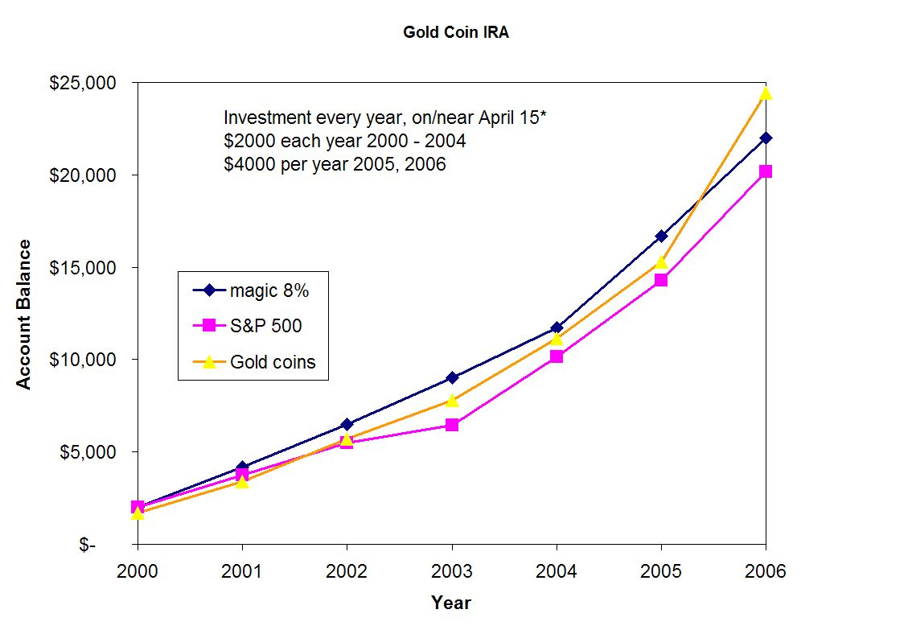

Friday, April 28, 2006
FYI, THE TCF FORUMS ARE DOWN, we hope temporarily. The hosting service, HostingMatters.Com is also down, so I'm going under the assumption that they're working on the problem. If the forums have not come back up by this evening, I'll hunt down Hosting Matters' tech support number and give them a call.
LATER
Okay, the forums are now back up, but -- in my infinite wisdom -- I was doing some administrative work and managed to delete half a dozen members (including some long-time contributors). Doh! I've asked our resident forum guru Bill St. Clair if there's anyway to restore the previous members (hopefully from backup). More info can be found in this thread.
Posted by Debra @ 11:15 AM CST [Link]
Thursday, April 27, 2006
BEN "HELICOPTER MONEY" BERNANKE GETS SOME OF THE RIDICULE HE SO DESPERATELY DESERVES
in a hilarious short video remake of Every Breath You Take. A group of Columbia Business School (CBS) grad students have put together a 4-minute video mocking the counterfeiter-in-chief. (28 MB WMV file) Gary North provides some background, and explains some of the jargon used in the video.
The beauty of a short video is that it can mock an ignorant, arrogant fool without taking the time to explain the long list of crimes and lies that justify the abuse. The estimable Mises Inststitute has produced a video that explains all. Telling the truth takes literally ten times longer (41 minutes versus 4.2 minutes), and few people will invest that much time. This is called “rational ignorance.” Everyone is short of time, so one is forced to make choices about what you do, what you learn, what you know, and what you rationally choose not to know. The problem with rational ignorance is that what you don’t know can hurt you.
[more]
Posted by Silver @ 02:54 PM CST [Link]
Wednesday, April 26, 2006
"MR. 32 PERCENT" -- AKA GEORGE W. BUSH -- is conducting a worldwide war against the democracy he so loves to tout. So says Jim Bovard in his latest.
Have our dumbed-down educations left us smart enough to spell I-R-O-N-Y?
Domestic evidence also piles up. The Busheviks might not directly have been responsible for a sedition investigation against an angry letter writer. But they sure created the climate in which such a witch-hunt can be conducted. And you know who must have decided that heckling is a federal crime while mass muder, slave labor, and religious suppression are just hunky dory.
Kinda makes you nostalgic for the days when we all got indignant over Clinton having people arrested for telling him he sucked. At least we did get indignant then. Now? Yawn ... What's on TV?
Posted by Claire @ 11:35 AM CST [Link]
ARE WE SURPRISED? It seems that mere national ID just isn't good enough for some control freaking bureaucrats. And oh my, how persuasive. Just look at all the "benefits" travelers would get from "secure" global ID control. Can't wait ...
Posted by Claire @ 11:07 AM CST [Link]
Monday, April 24, 2006
THIS WEEKEND I BRAVED A HOWLING GALE to enter Ian's TCF Rifle Postal Match aka The Mordechai Anielewicz Memorial Rifle Match. All my friends know that when the dry desert wind rages, I look for a cave to hide in. And I'm a notoriously bad rifle shooter; I expect my scores to be somewhere near the bottom of the heap, even without the wind to blame. But by damn, I did it.
The moral of this story: If I can do this, so can you. (Heck, I even had fun, though I wouldn't admit it.) You've still got 'til April 29 to get your targets in the hands of the judges.
Posted by Claire @ 10:27 AM CST [Link]
NEW HAMPSHIRE, ONE OF THE STATES CHOSEN TO PILOT REAL ID has a different idea. Good going, guys. :-)
Posted by Claire @ 10:16 AM CST [Link]
Friday, April 21, 2006
AH. WELL THAT EXPLAINS IT THEN. We're all opposed to individual RFID tagging and national ID cards because we're such a bunch of ignorant rednecks.
I don't think this article means to be a howling hoot. But it is.
(This once again from CASPIAN, Katherine, and the whole "rifle racks on their motorcycles" crew.)
Posted by Claire @ 01:19 PM CST [Link]
Thursday, April 20, 2006
IN ALL THE TALK ABOUT WHETHER GUNS SAVE LIVES, the daily comforts of carrying a gun tend to get overlooked. A friend just gave me a perfect example of the effect that the mere presence of firearms can have. She rents an office from a man who is ... well, you might say that Wesson Oil is less greasy. The man is a true slimeball -- and evil tempered to boot, storming through the building, yelling at employees and tenants alike.
But he's always scrupulously polite to her and her staff. Mr. Wesson Oil is fully aware that someone in her office carries a sidearm at all times as a matter of principle. Typically, several people do.
Recently, Mr. Wesson Oil's business has been going down the tubes. He's gotten himself into a financial La Brea tar pit. A week or so ago, tenants began to get the creepy feeling that someone was entering their offices at night. Nothing was missing. But things had been "inspected." Then last night, a woman working late caught Mr. Wesson Oil poking his passkey into her door. Behind him were two large men she'd never seen. "I'm ... uh, testing to make sure all the locks are locked," Mr. WO stammered before backing away.
My friend's office is apparently the only one in the building he hasn't been casing. She's moving her valuables out, anyway. And for the next few nights, an armed man will be sleeping on a cot behind a partition. Of course she'll move to new quarters as soon as she can. But in the meantime her experience is an interesting example of Heinlein's dictum that "An armed society is a polite society." Also a perfect example of the fact that craven, night-sneaking cowards fear an armed person, even when she's about half their size and sweet as apple pie with ice cream on it.
Posted by Claire @ 04:13 PM CST [Link]
AWWWWW. Now here is one of the nicest dog-people reuniting stories you'd ever want to read. Love that picture, too. And how humane (and sensible!) that these two could stay in the hospital together.
Posted by Claire @ 10:05 AM CST [Link]
Wednesday, April 19, 2006
ON THIS DATE, BOTH THE AMERICAN REVOLUTION AND THE WARSAW GHETTO UPRISING BEGAN. What better way to celebrate those two historic events than by entering our Mordechai Anielewicz Memorial Rifle Match? There's still plenty of time to shoot the course and send in your targets; the deadline is April 29th.
Posted by Ian @ 08:41 PM CST [Link]
Monday, April 17, 2006
I HAVEN'T YET SEEN AARON RUSSO'S new film, America: From Freedom to Fascism. But I admire the man -- and he's now asking for help to get his movie seen by more people.
The following request, written by Franklin Sanders, arrived today. [more]
Posted by Claire @ 11:16 AM CST [Link]
PERHAPS THERE SHOULD BE A BOOK CALLED THE FREEDOM WAY. I ran into this page-long passage in The Artist's Way. Fellow hermits here at the Desert Hermitage agreed that with just a few word changes it described most of the self-proclaimed freedom advocates we know. And perhaps describes most of us, at one time or another. [more]
Posted by Claire @ 10:46 AM CST [Link]
Sunday, April 16, 2006
THIS IS ONE OF THE MOST SENSIBLE THINGS I've ever read about the health-insurance "crisis." As with nearly every other contemporary "crisis," it's largely government created and the solution (which of course will never be considered) isn't more government-mandated insurance, but less.
Posted by Claire @ 10:23 AM CST [Link]
Saturday, April 15, 2006
Posted by Claire @ 10:30 AM CST [Link]
WE ARE ALL BEING WIRETAPPED
The revelations of NSA wiretapping on US citizens puzzled many observers for a time. Why circumvent the FISA law and secret court that not only allowed spying to begin before getting a warrant, but had only turned down about 4 requests out of 19,000?
The simple answer was that the Bushiveks knew full well that even the supine FISA judges would never approve of what was being done. What could violate even the pathetically weak protections offered by the FISA law?
Answer: Massive eavesdropping on ALL communications, using ECHELON-like technology to search for key words or patterns. Bug every American citizen, resident, and visitor. Spy on us all and then sort it out.
I've kept my deductions to myself; I already have too much of a tinfoil hat reputation among friends and co-workers. The problem with being paranoid in today's Amerika is that they really are out to get you.
The proof is coming out as a result of a lawsuit filed by the Electronic Frontier Foundation. AT&T has allowed the NSA to hire secret workers, install secret rooms in major switching centers, and diverted most or all voice and data traffic on AT&T's huge network into a set of sniffer boxes. Bruce Schneier has details on his blog, and Wired relates the tale of how a true patriot Whistle-Blower Outs NSA Spy Room.
If you have faith in the courts, you can sit back and wait for the feds to police themselves and put a stop to the most egregious, blatantly illegal act since the founding of the republic.
I have faith in free markets, and no faith that government-appointed, government-paid Nazgul will do the right thing. I have replaced AT&T as my long-distance voice and internet service provider. I will never willingly do business with any AT&T affiliate of any kind, ever again. This corporation needs to be reminded that they serve consumers, not government.
I know that many people will say that AT&T had no choice, that they were compelled to do what they have done. I don't know, and I don't care. There is a higher power than the feds, who have forgotten whom they serve. Consumer choice can put a stop to this nonsense right now. Let a few million people cancel their service, and AT&T will get the message. Those wiretaps will be axed out faster than you can say "executive stock option."
The question is not of 'legality.' The question is what you will stand for. I won't stand for this. Will you?
Posted by Silver @ 08:55 AM CST [Link]
Friday, April 14, 2006
YOU KNOW THAT QUIP, "Alcohol, Tobacco, and Firearms should be a convenience store, not a government agency"? Well, by golly ...
(A make-my-day find by Randall the Dreamer who asks, "Is this in Hardyville?" The answer, unfortunately, is no. Grouchy's sells only Guns & Liquor. Perhaps some entrepreneur would like to come in to Hardyville and offer competition?)
Posted by Claire @ 10:25 AM CST [Link]
ANOTHER REPORT FROM THE DESERT HERMITAGE. Boy it feels like a long time since I did this. No frost fairies on the window this time, for sure. But rattlesnakes on the road and hot, dry sand in the washes. It's lovely, although also hard for a forest-dwelling northwesterner to get used to.
For the last three days I've been up here on homestead hill without driving anywhere or spending any money. I know that must be quite normal for Jack Boone up there in the Arctic Circle. The Weaver family definitely knew what it was like not to leave their mountaintop for much longer than a lousy three days. Probably lots of backwoodsians think nothing of hunkering down for a week at a time. But even with my small-scale life it's unusual for me not to run some little errand or another every day. Usually even if people stay at home to putter we have to duck out and spend $49 at the hardware store or buy a pizza. Nothing wrong with that. (I love spending money on cool stuff.) This is just different. [more]
Posted by Claire @ 10:17 AM CST [Link]
Thursday, April 13, 2006
ONLY COPS AND SOLDIERS ARE QUALIFIED TO ... wear masks???
"Seeing someone with something across the face, from a federal standpoint — that’s not right,” McLemore said, explaining why agents believed something to be amiss.
Yep, I'll say. From a "federal standpoint" seeing agents with "something across the face" signifies that matters are majorly amiss in the country. For the fed-ninjas to start taking guns to you and me for that "offense" signals that matters are even worse than we thought.
(Thank you to AZ and SJ -- and to the always madcap agents of the BATFE for providing so much constant entertainment.)
Posted by Claire @ 12:54 PM CST [Link]
OF ALL MOVIES IN THE WORLD guess which one is first to release on HD DVD.
I'm still thinking that HD DVD (in either of the two competing formats) is a solution looking for a problem. I mean, do you think there's anything wrong with DVD? Egads. And some awful privacy violations seem to be built into the new technology. But what the heck. At least one of the favorite libertarian films will claim a first.
(Thank you once again to SJ, one of several people always right on top of Serenity and Firefly news.)
Posted by Claire @ 09:31 AM CST [Link]
Wednesday, April 12, 2006
THE US MARKET SHARE OF INTERNATIONAL TOURISTS IS DOWN 35% since 1993, claims the Travel Industry Association of America.
I'm not sure how this figure, quoted in Fewer international tourists coming to US in today's Financial Times, was determined. Visiting the TIA website and searching for "market share" reveals a table showing declines in tourists from most countries, but not -35%.
If the TIA figures are correct, the loss of tourists represents some eye-popping losses; they claim $286 Billion in lost revenue.
What's interesting about the FT article is the statement by Master "King of Denial" Chertoff, who famously dissembled when confronted with NPR eyewitness reports that thousands of Katrina refugees were stranded in horrifying conditions in the New Orleans Convention Center. Speaking of tourists avoiding the US, the King claimed that "We are using technology to reduce delays to legitimate travelers while raising the bar to keep out those who are not."
Speaking from my experience with far too many international journeys before and since 9/11, I can state unequivocally that delays to legitimate travelers (I consider myself legitimate) have increased dramatically. Entering the US is a dreadful experience even for US citizens, and I am frankly ashamed at the "welcome" given to visitors. As for the technology, fingerprinting and mug-shooting every non-citizen who dares to cross our borders is certain to make tourists feel unwelcome. The parallels to the treatment afforded suspected criminals escapes no one except those who design these nonsensical programs.
So tourists are shunning the US, in numbers large enough make even professional looters and spendthrifts like Congress notice. Good for them. The free market will deal with the systematic mistreatment of international travelers at the hands of American authorities. The only problem is, we are all poorer as a result.
Posted by Silver @ 01:52 PM CST [Link]
Sunday, April 9, 2006
APPEARS V for VENDETTA is a box-office success, if not a blockbuster. It's made back its budget and then some. I've seen it twice and liked it even better the second time. (Some of the elements that didn't make sense on first viewing became more clear.) Cannot wait for the DVD & I expect those sales to be strong.
So do you suppose my movie-review-exchanging friend Oliver will get his wish and that movies like that will be released at least once a month? Sigh. Wouldn't it be 'loverly'?
Posted by Claire @ 05:30 PM CST [Link]
ANGEL SHAMAYA IS FREE. He still has to pay consequences (and a shockingly large legal bill for a misdemeanor case settled without trial). But his own reputation and his friends came through for him. The news (from Gary Marbut, who's been one of the heros here) also contains a pleasant surprise at the end.
Angel could still use donations to his legal fund, if you have a few bucks to spare.
Posted by Claire @ 04:51 PM CST [Link]
Friday, April 7, 2006
GET READY FOR THE AIRPORT "TRUTH VERIFIER. In Russia, so far. But they've been talking about doing the same here.
LOL, I love that question, "Have you ever lied to the authorities?" Sure thing, there, Sherlock. And I'd consider anybody who hasn't to be a "suspicious character" indeed.
(Thank you to AZ.)
Posted by Claire @ 02:02 PM CST [Link]
WILL THE SUPREMES CURB SWAT ABUSES? Or give the okay for even more kick-in-the-door enforcement? Kudos to Radley Balko for the incisive writing and Rich Lucibella (contrarian publisher of SWAT Magazine) for the heads-up.
Radley's article originally appeared on Slate (with links). But it'll be interesting to watch whatever discussion develops on Rich's link.
If the Supremes say go ahead and kick, I hope their own doors are first on the agenda.
Posted by Claire @ 01:52 PM CST [Link]
Thursday, April 6, 2006
Encrypted VoIP Telephony?!?!
Raving Reporter Thunder here.
Today's neato, peachy-keen, kick-butt news comes from Wired News. It appears that Philip Zimmerman, that gentleman that gave us PGP back in 1991, has been working on Z-Fone.
It won't make your conversations 100% secure, but then again, nothing ever does. What it does do is it makes it extremely difficult for anyone to listen in. And what better thing to do than to bog the NSA and other unscrupulous people down with a bunch of encrypted talk about the basketball game or the wonderful recipe for lamb chops you tried out last night.
The beta version is now out and they are looking for beta testers! Right now, it only works on OS X and Linux and those of you without blazingly fast internet connections or computers may have some trouble. Another downside is that Mr. Zimmerman also requires an e-mail address for anyone that wants to be a tester.
Oh, did I mention that it's open source? 
Posted by Thunder @ 04:11 PM CST [Link]
Wednesday, April 5, 2006
SIMPLICITY, PROSPERITY, AND A TRAVEL-NUMBED BRAIN. Sorry for being even a little more silent than usual lately. (And bless my fellow blogistas for filling the gaps so informatively.) I sneaked off to the Desert Hermitage without any advance notice. Several days on the road left my body beat and my brain feeling as if somebody injected Novocaine into it.
Setting off on road trips, I always intend to use the long, empty hours to plot books, solve personal dilemmas, chant mantras, or do something else useful. But distance-driving is so numbing (when it isn't either harrowing or just plain annoying) that I end up doing the solo adult equivalent of "Are we there yet???" for 12 hours a day.
Still, my brain was struck by one useful (I hope) insight as I passed through one of the West's galloping-growth cities. Okay, it's more of a rant than an insight. But what the hell. It has to do with the real meaning of prosperity. [more]
Posted by Claire @ 02:35 PM CST [Link]
WIKIOCRACY! Well, surely We the People can't possibly do any worse at writing laws than Congress regularly does.
(Thank you to F42 for this one.)
Posted by Claire @ 02:18 PM CST [Link]
YOU VILL HAFF HEALTH INSURANCE if you live in Massachusetts.
(Thank you Simon Jester. But why the hell do I keep thanking people for all this bad news? Ah well, I'm glad the SJ's and other Friends of Wolfesblog dig so deeply through all the polluted mud of the news so I don't have to.)
Posted by Claire @ 02:16 PM CST [Link]
WOW. IT JUST GETS SCARIER AND SCARIER. Here's a New York Times lesson plan to teach middle-schoolers and high-schoolers about RFID people-tracking technologies. It begins with students "sharing opinions" about spychipping humans. But notice that from there on, the only "opinions" allowed are entirely pro-RFID. After expressing their presumably glowing endorsements of universal surveillance, our kidlets are asked to spend the rest of their time brainstorming new ways to track themselves -- and the rest of us.
Who comes up with this stuff? And where does the NYT get off calling this propaganda "education"?
(Thank you to Katherine -- although once again this feels more like a cause for cursing than thanks.)
Posted by Claire @ 02:09 PM CST [Link]
Monday, April 3, 2006
IF WE'RE GOING TO WORRY ABOUT UNLIKELY ATTACKS, WHY CAN'T THEY BE EXCITING AND INNOVATIVE ONES?
Bruce Schneier, one of the few genuine experts on security (in sharp contrast with the ignorant parasites that infest our three-letter agencies) has announced the Movie Plot Threat contest.
Entrants are invited to submit the most unlikely, yet still plausible, terrorist attack scenarios they can come up with.Your goal: cause terror. Make the American people notice. Inflict lasting damage on the U.S. economy. Change the political landscape, or the culture. The more grandiose the goal, the better.
Assume an attacker profile on the order of 9/11: 20 to 30 unskilled people, and about $500,000 with which to buy skills, equipment, etc.
This is a great idea. Ridicule and rambunctious skepticism are the most appropriate response to almost all "security theater," another Schneier term for policies that have no real benefit but make (some) people feel better.
Posted by Silver @ 07:11 AM CST [Link]
Saturday, April 1, 2006
THE PERFORMANCE OF THE REAL IRA
There's only 2 weeks left to make this year's IRA contribution - unless you use the REAL IRA. Then you can contribute any time. There are no contribution limits, no "required distributions," no forms to fill out, no taxes to pay, and no penalties for early withdrawal.
But cautious savers want to know how one plan stacks up against another.

It's not only easier, more flexible, and more private, but the REAL IRA has been outperforming the alternatives! * It's been better than the S&P 500 for a long time, and lately its outperformed the "magic 8%" portfolio. Better still, these results assume over $1,600 less investment in the REAL IRA.
*Past performance is not indicative of future returns. This is not financial advice. You, and you alone, are responsible for your REAL IRA.
For details on the how the chart was prepared, read on: [more]
Posted by Silver @ 10:13 AM CST [Link]
GREED, ENVY, AND OTHER-PEOPLE'S-BUSINESS MINDING. It's the Way of the Twenty-First Century. But surely Hardyville is immune?